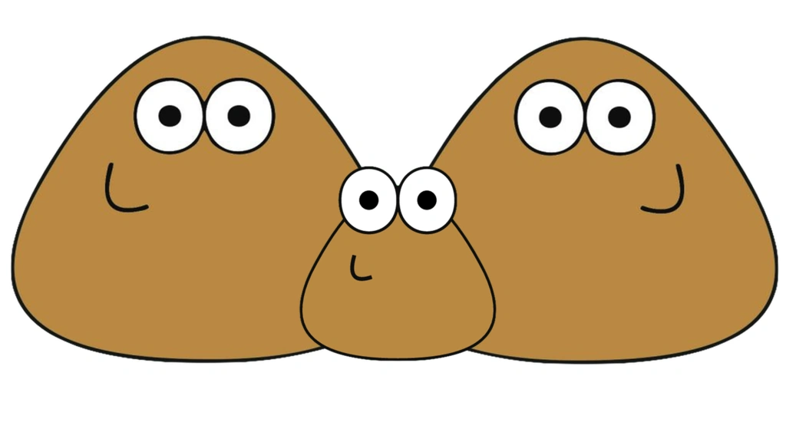
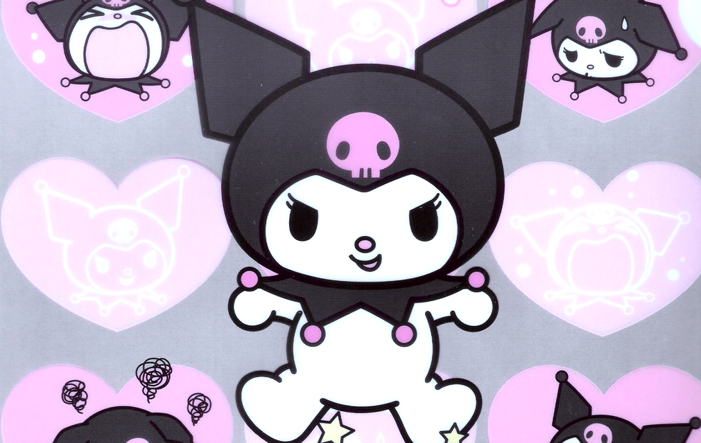

- 
- 
Las peliculas son uno de mis aficones el cual adoro mucho, actualmente los generos que me gustan son el de terror, comedia, drama y romance, me encanta cuando en una pelicula termina con un final misterioso.
Para la musica tengo bastantes tipos y generos de musica, pero mi favorita entre todos es la musica house, siempre me ha gustando ya que desde muy pequeña escuchaba con mis primos.
En mis pasatiempos tengo muchas actividades como dibujar, cantar, cocinar, dibujar y lo que mas me gusta hacer es resolver problemas de matematica.
El dibujo es algo en el cual me especializo muy bien siempre en mis tiempos libres me la paso dibujando cualquier cosa que se me venga a la mente.
Soy una chica de 16 años de edad, actualmente estoy estudiando un bachillerato en Computación, mi meta a llegar es graduarme de bachillerato, me gusta el cafe, salir con amigos, me considero una persona tranquila.
Una de las habilidades que deseo obtener es el de poder bailar bien y que enfrente de varias personas no me de pena hacerlo.
Desde muy pequeño siempre he querido aprender a canatar ya que mi vos no me ayuda desearía poder afinarla bien y poder cantar lo que yo quiera.
Lo que siempre me a llamado la atención es el de poder programar, fue una de las razones por la cual decidi estudiar computación.